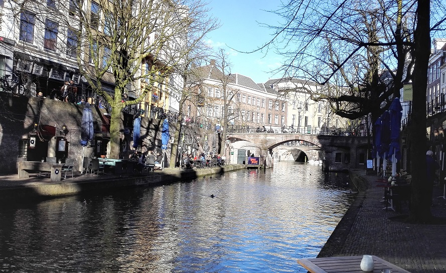
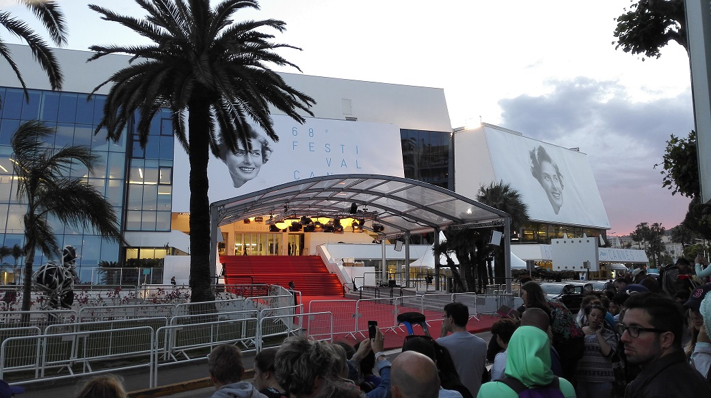

Konstantinos E. Bountouris, M.Sc.
Senior Technical Support Engineer
Currently @ FORTINET
Sophia-Antipolis | France

Konstantinos Bountouris, Senior Technical Support Engineer at FORTINET
905 Rue Albert Einstein
06560 Valbonne, France
email: kbountouris [at] fortinet [dot] com
tel: +33 (0)6 01 30 55 25


• Curriculum Vitæ 

• M.Sc. Thesis and Presentation
• Scheduling in LTE/LTE-A with a learning engine
• Diploma Thesis and Presentation
Welcome to my homepage! My name is Konstantinos Bountouris and I was born and raised in Athens, the capital of Greece. I live in Nice [Greek: Νικαια], in the south of France.
Currently, I work as a Senior Technical Support Engineer in FORTINET, in the field of TCP/IP networks, firewalls and network security.
In the past, I worked as a Telecom Research Engineer at EURECOM Institute in the field of 5G RAN, C-RAN (Cloud/Centralized RAN) and virtualization of 5G mobile networks.
Also, I worked as a Technical Engineer in Com4Innov in the field of telecommunications in 4G / LTE / IMS / Internet of Things. More particularly, I was responsible for the support and proper operation of the eNodeBs, the Evolved Packet Core and the IP-Multimedia Subsystem and I was involved in several European projects, e.g. the XiFi project and the FIESTA-IoT project.
I obtained my Master of Science degree in Mobile Communications (January 2015) at Institut EURECOM, by successfully completing my graduate internship in Com4Innov working on OpenIMS core. I received my Engineering Diploma (5-year Bachelor's program) from the Electronics and Computer Engineering Department, in Technical University of Crete, Chania, in September 2013, under the supervision of Professor Athanasios Liavas.
• FORTINET [Technical Support Engineer] | Nov 2018 - Currently
Duties:
• Technical support of Fortinet customers for FortiManager, FortiAnalyzer and FortiGate products
• Support via phone and ticketing system
• EURECOM Institute [Research Engineer] | May 2017 - Oct 2018
Duties:
• Deployment of C-RAN OpenAirInterface5G network solution
• Research and Development in the field of 5G RAN/Cloud RAN technologies
• Testing of C-RAN virtualized components (vRCC, vRRU, vUE)
• Writing deliverables for the C-RAN project
• Com4Innov [Technical Engineer] | Feb. 2015 - Apr. 2017
Duties:
• Analysing traffic with Wireshark traces + investigation of alarms in OSS
• Troubleshooting Core Network + Radio equipment (xHaul interfaces)
• Integration of OpenAirInterface5g with Com4Innov EPC (Ericsson eq.)
• Deployment/installation of RTU5 probes and monitoring of 4G EPC
• Responsible for deployment of Com4Innov LoRa network infrastructure
• FiWare GEs/REST APIs - Integration of FiWARE environment with LoRa OSS
• Principal contact of LoRa customers in Com4Innov LoRa operator
• FIESTA-IoT | H2020 European Project
• Preparation of deliverable / editor of deliverable for the leading task
• IT Administrator for the FIESTA-IoT Project (Deployment, maintenance and support of VMs and web services [Gitlab, Moodle etc])
• Integration of Com4Innov IoT Testbed (sensors/gateways/APIs/cloud infrastructure/semantic annotation)
• FiWare Generic Enablers / HTTP / MQTT / REST APIs
• XIFI project | eXperimental Infrastructures for the Future Internet
• Com4Innov [6-month full time graduate internship] | July 2014 - Dec. 2014
Integration of open source core network (EPC) and IMS infrastructure in Com4Innov 4G/LTE/IMS platform
• Study and installation of "S3C" Generic Enabler, provided by XiFi
• Definition of use cases for the software implementations of EPC/IMS (VoIP, roaming)
• Interconnection of open source EPC and IMS with Com4Innov real EPC and IMS infrastructure
• Municipal Water & Sewage Company of the Northern Coast of the Prefecture of Chania [3-month full time internship] | June - August 2012
Preliminary design of telemetry system for the water supply network of the
Municipal Water & Sewage Company
• M.Sc. in Mobile Communications (Jan. 2015)
Mobile Communications Department, Institut EURECOM, Telecom ParisTech
Sophia Antipolis, France.
Thesis supervisors: Professor Christian Bonnet and Philippe Badia.
Thesis title: "Integration of open source IMS and S3C Generic Enabler in Com4innov 4G/LTE/IMS infrastructure."
• Dipl.-Ing. Electronic and Computer Engineering (Sept. 2013)
School of Electronic and Computer Engineering, Technical University of Crete
Chania, Crete, Greece.
Thesis supervisor: Professor Athanasios P. Liavas.
Thesis title: "Spectrum Sensing Techniques for Cognitive Radios."
• Integration of open source core network (EPC) and IMS infrastructure in Com4Innov 4G/LTE/IMS platform (M.Sc. thesis)
Abstract: The last decade there is an extreme increase in usage of wireless technologies and devices, thus, the focus of research and development from telecommunication operators and manufacturers has turned to the direction of the provision of higher data rates and better QoE to the end users. To this direction, in 3GPP Release 5, IMS was introduced and it is a valuable part of the revolutionary and upcoming VoLTE for the provision of HD voice and video calls over the LTE network. In this thesis, an open source software implementation of the IMS core, namely OpenIMS core, is treated, installed, configured and over which a number of experiments is taken place, for ex. VoIP through a software
platform. The installation and usage of OpenIMS is in the context of the european XiFi project, under the Fi-Ware platform. In addition, S3C GE, which is provided by the XiFi project, is taken into account in order to handle easier the connectivity of the XiFi and the Com4innov users, as well as the services that the Com4innov 4G/LTE/IMS network offers.
Download report
• Scheduling in LTE/LTE-A with a learning engine (semester project)
Abstract: In this project, an algorithm for uplink scheduling in LTE/LTE-A through a learning approach is proposed and analysed. This algorithm may help eNodeBs (eNBs) in the scheduling of users, a procedure which is currently done via the energy-demanding as well as costly X2 interface. With the proposed solution there is no need of exchanging channel state information between eNBs, but the idea is that the eNBs adopt the correct scheduling policy by learning from the past. Therefore costs are reduced. We compare the performance of our algorithm with the optimal scheduling, the Hungarian, as well as with the random scheduling. From the results, we notice that this learning algorithm could be applied in situations in which the interference is high, like moving cells and Body Area Networks
(BANs).
Download report
• Spectrum Sensing Techniques for Cognitive Radios (diploma thesis)
Abstract: Recent studies on radio spectrum have shown that it is not used efficiently. Research efforts have given birth to Cognitive Radio (CR). CR is the new key enabling technology that is presented as a solution to the spectrum scarcity. In this thesis, we are giving important background information about CRs. Moreover, we describe the problem of spectrum sensing, what are the spectrum holes and the challenges that a CR must face. A big part of this thesis is the study of the techniques for sensing the spectrum. Finally, we are discussing Cooperative Spectrum Sensing.
Download Thesis
• Indoor audio GPS (Graduate course project)
That was a project for the graduate course "Analysis and Design (Synthesis) of Telecom Modules". Abstract: The Indoor Audio GPS is a simple localization testbed using acoustic waves and the iCubes Wireless Sensor Network platform. The goal is to localize a moving vehicle indoors with low-cost communication hardware. The system consists of four parts: 4 ceiling (anchor) nodes, the vehicle to be localized, a coordinator node and a PC. The vehicle is a toy-car equipped with a microphone, an acoustic bandpass filter and a C8051f320 Development Kit, interfaced to a CC2500 radio module. Location is estimated with the use of convex optimization algorithms running on a PC. The provided testbed is designed with low-cost, custom audio ranging electronics, RF communication and easy-to-use, Matlab interface that allows quick experimentation with various localization algorithms.
Project Website
• TUC Agent 3D - An agent for the Robocup 3D simulation league
That was a project for the course "Autonomous Agents". The goal of this project was the implementation of an agent for the Simspark Soccer Simulator 3D. This is a group of 7 players which run the same program and are able to take part in a simulation of a football match with robots. These matches were conducted under the 3D RoboCup Simulation League.
Project Website
• English: Full professional proficiency [ILR Level 4]
• French: Full professional proficiency [ILR Level 4]
• Spanish: Limited working proficiency [ILR Level 2]
• Italian: No proficiency [ILR Level 0]
• Greek: Native or bilingual proficiency [ILR Level 5]
-
The grandiose Colosseum, Roma, Italy
-
Alassio, Italy
-

The imposing Schönbrunn Palace, Vienna, Austria
-
Rijksmuseum, Amsterdam, The Netherlands
-
St. Peter's Basilica in Piazza San Pietro, Vatican
-
The picturesque village of Arachova, Greece
-

River Vecht, Utrecht, The Netherlands
-
Arènes d'Arles, Arles, France
-
Statue of Vittorio Emanuele II, first king of Italy, Turin, Italy
-
The paradise of Balos, Chania, Crete, Greece
-
Lisbon, Portugal
-

Cannes Film Festival, Cannes, France
-

The Temple of Parthenon on top of the Acropolis, Athens
-
Font Màgica, Montjuïc, Barcelona, Spain
-
St. Jean cap-Ferrat, France
-
A colorful village in Cinqueterre, Italy
-
Torre Calatrava or Torre Telefonica, Montjuïc, Barcelona, Spain
-
Duomo di Milano and statue of Vittorio Emanuele, Piazza del Duomo, Milan, Italy
-

Monaco port, Monaco
-
The beautiful view from a balcony in Santorini, Greece
-
Piazza Navona, Roma, Italy
-
Karluv Most, Prague, Czech Republic
-

Louvre Museum, Paris, France
-

The beautiful village of Vernazza in Cinqueterre, Italy
-
The view of the city and the beach of Nice from the castle, Nice, France
-
The enlightened Eiffel Tower in Paris, France
-
The magnificent old port and lighthouse in Chania, Crete, Greece